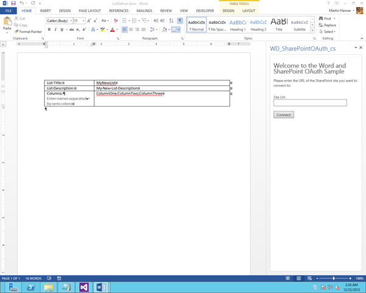
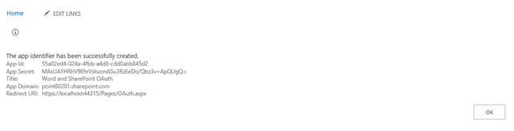
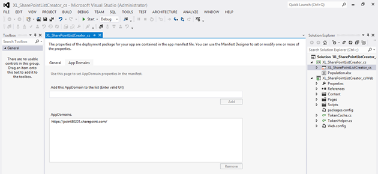

Description
Provided by:
This app for Office includes a task pane app. It also includes a Word document with sample data, named ListDefiner.docx.
The ListDefiner.docx document is set as the StartAction property of the app for Office. The document has three named RichTextContentControl objects. The following screen shot shows how the document and the app will appear after you launch the solution.
Figure 1. View of ListDefiner.docx showing task pane app

The sample demonstrates how to use JavaScript to add bindings to the named controls in the document. It also demonstrates how to retrieve the values from those bindings. Then, the sample shows how to authenticate against a SharePoint site, and finally, how to create a list in the SharePoint site based on the data retrieved from the Word bindings.
Prerequisites
This sample requires the following:
-
Visual Studio 2012
-
Office Developer Tools for Visual Studio 2012
-
Word 2013
-
Access to an Office 365 Developer Site
Key components of the sample
The sample app contains the following:
-
The WD_SharePointOAuth_cs project, which contains the following files:
-
The WD_SharePointOAuth_cs.xml manifest file.
-
The ListDefiner.docx document, which is prepopulated with a table containing RichTextContentControls.
-
-
The WD_SharePointOAuth_csWeb project, which contains many template files. However, the files that have been developed as part of this sample solution are the following:
-
ListCreator.aspx (in the Pages folder).
-
OAuth.aspx (in the Pages folder).
-
OAuthHelper.js (in the Scripts folder).
-
RedirectAccept.js (in the Scripts folder).
-
WD_SharePointOAuth_cs.js (in the Scripts folder).
-
TokenCache.cs (in the root folder).
-
TokenHelper.cs (in the root folder).
-
Web.config (in the root folder).
-
Web.debug.config (in the root folder).
-
All other files are automatically provided by the Visual Studio project template for apps for SharePoint, and they have not been modified in the development of this sample.
Configure the sample
Follow these steps to configure the sample.
-
Browse to the /_layouts/15/appregnew.aspx page your Office 365 Developer Site (for example, https://<YourSiteName>.sharepoint.com/_layouts/15/appregnew.aspx).
-
Click the Generate buttons for both App Id and App Secret, and then type the URL of your site as the App Domain. Then fill in the other text boxes as shown in Figure 2.
Figure 2. AppRegNew page

-
Click Create. Your page should resemble the screen shot in Figure 3.
Figure 3. App ID and App Secret properties
 -
Leave the page open so that you can refer to the data, and switch back to Visual Studio.
-
Double-click WD_SharePointOAuth_cs as shown in Figure 4, and then add your App Domain value as shown.
Figure 4. Adding the AppDomain to the WD_SharePointOAuth item
 -
Edit the Web.config and Web.debug.config files so that they contain the ClientId and ClientSecret values that you generated from SharePoint.
-
When you are sure all the values have been configured correctly, save all files in Visual Studio, and then close the browser.
No other configuration is required.
Build the sample
To build the sample, press CTRL+SHIFT+B.
Run and test the sample
To run and test the sample, press F5.
Figure 5 depicts the app shortly after launching. You have opened the Word document and have entered the URL to your Office 365 Developer Site, and then clicked Connect. At this point you are prompted to sign in.
Figure 5. Sign-in to the Word app

Troubleshooting
If the app starts with a blank document instead of the one shown in Figure 1, ensure that the StartAction property of the WD_SharePointOAuth_cs project is set to ListDefiner.docx and not just to Microsoft Word.
Ensure you have thoroughly read and followed the instructions in the "Configure the sample" section of this document
Change log
First release: January 2013.